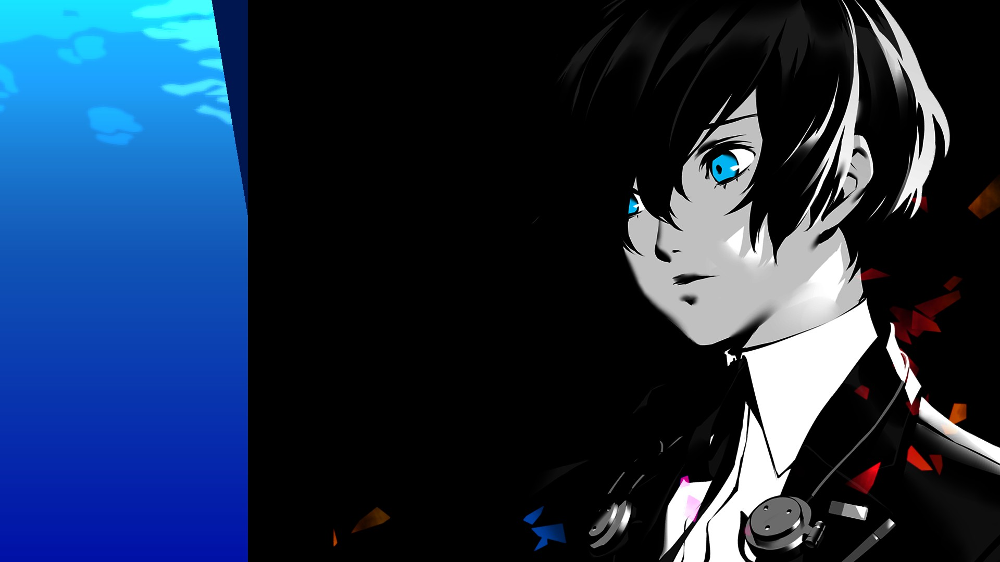
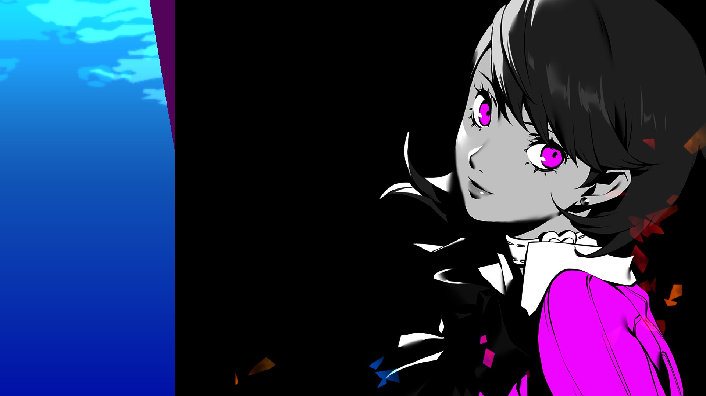
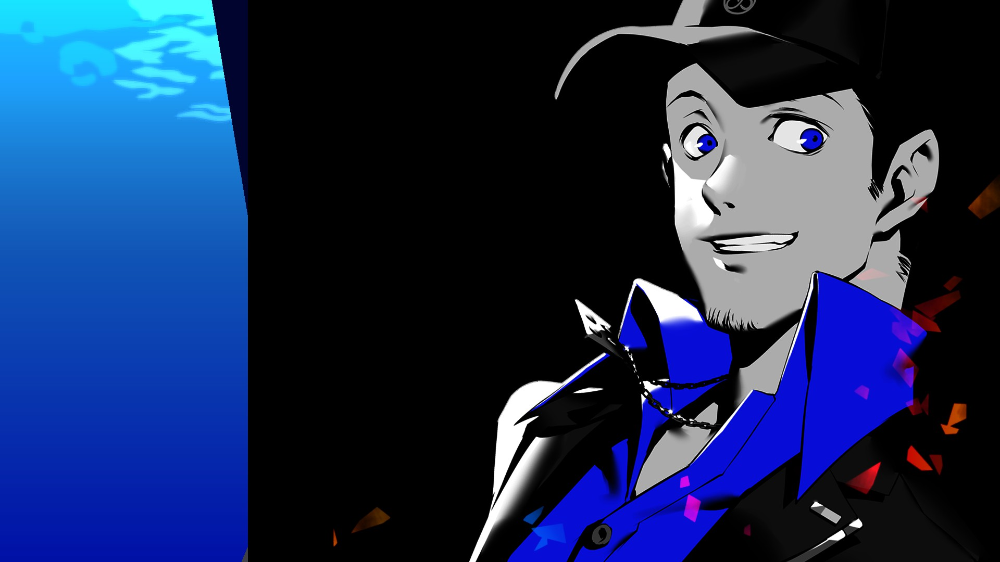
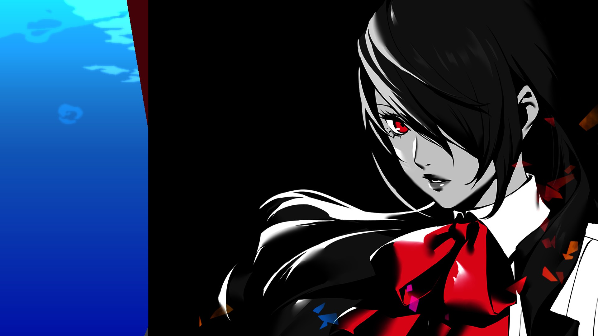
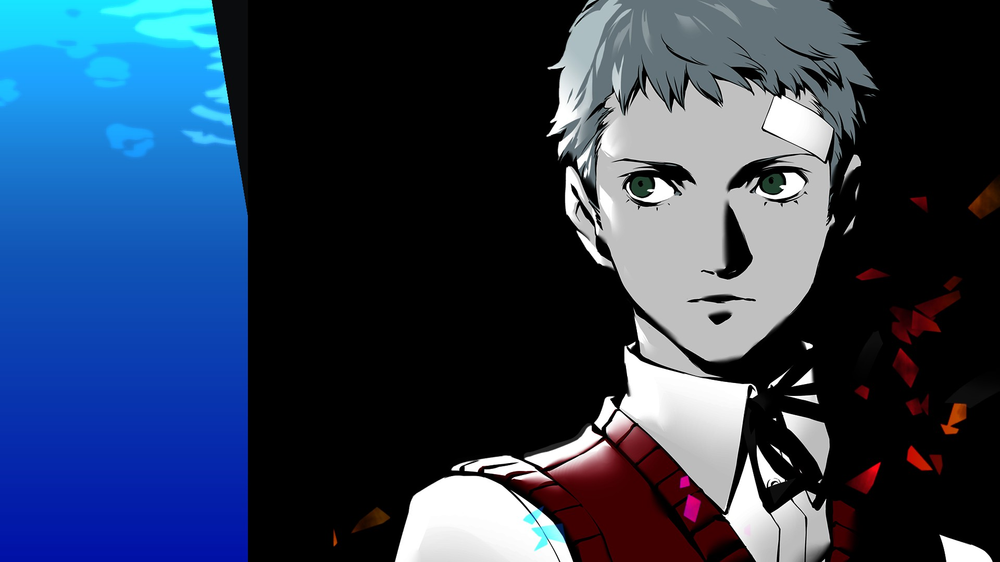
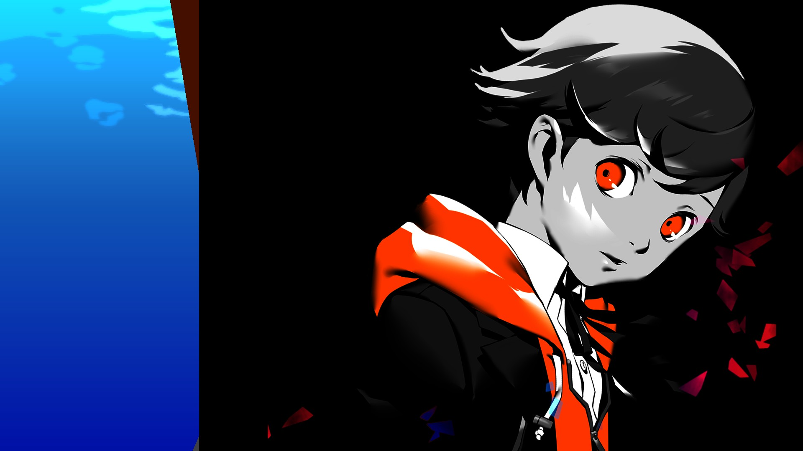
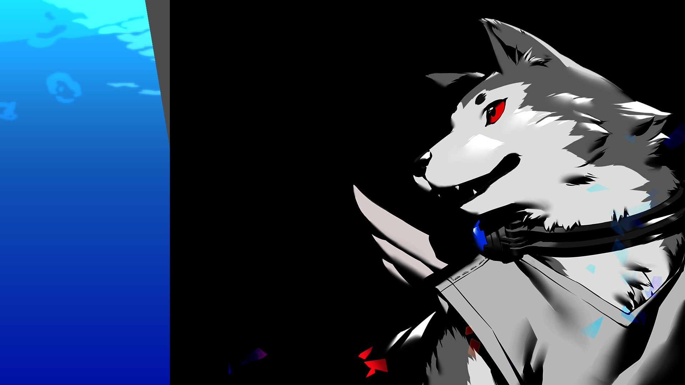
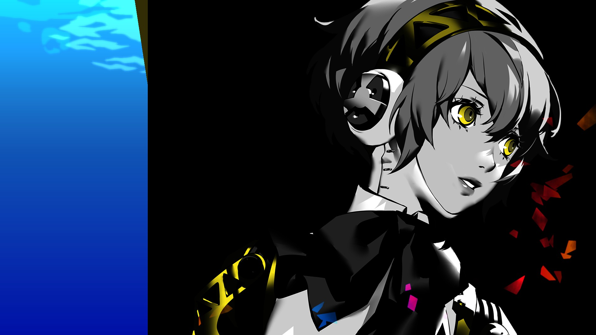
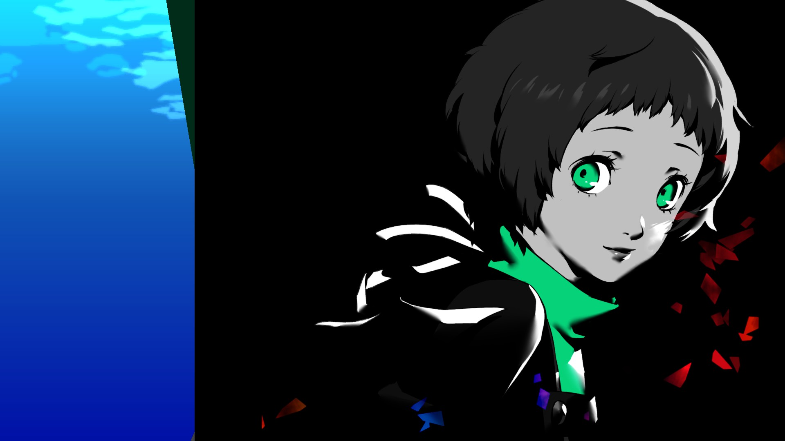

Conoce al equipo
La Sociedad Extraescolar de Ejecución de Sombras, tambien conocida como S.E.E.S es un programa extracurricular después de la escuela para Usuarios de "Persona" en la Escuela Secundaria Gekkokan. Mientras que todos en la escuela piensan en SEES como un club escolar, su verdadero propósito es eliminar Shadows e investigar tanto Tartarus como la Hora Oscura.
Miembros:

- Su nombre queda a decision del jugador
- A diferencia del resto de personajes, puede usar diferentes "Persona"
- Actua como el lider del equipo durante Operaciones Especiales
El protagonista

- Persona Inicial: IO
- Compañera de clase del protagonista
- Como gran parte del equipo, ya era miembro antes de tu llegada
Yukari Takeba

- Persona Inicial: Hermes
- Compañera de clase del protagonista
- Un poco payaso
por no decir pendejo, pero asi lo queremos
Junpei Iori

- Persona Inicial: Penthesilea
- Parte del equipo fundador de S.E.E.S
- Heredera del Grupo Kirijo
Mitsuru Kirijo

- Persona Inicial: Polydeuces
- Tambien Parte del equipo fundador de S.E.E.S
- Serio y diciplinado. Nunca da su espalda a una buena pelea
Akihiko Sanada

- Persona Inicial: Castor
- El tercer pilar del equipo fundador de S.E.E.S
- Deserto por un tiempo del equipo por un incidente que sucedio durante una operacion
Shinjiro Adagaki

- Persona Inicial: Nemesis
- El miembro mas joven de S.E.E.S
- Estuvo involucrado en un incidente de la hora oscura años antes.
Ken Amada

- Persona Inicial: Cerberus
- Aun despues de perder a su dueño (un monje), siguio cuidando el templo
- Durante un ataque de una sombra que salio de Tartarus, los miembros de S.E.E.S descubrieron que podia usar un "Persona"
Koromaru

- Persona Inicial: Palladion
- Androide creada por el grupo Kirijo para exterminacion de "Shadows"
- Parece tener una necesidad innata de proteger al protagonista
Aigis

- Persona Inicial: Lucia
- Chica que descubrio su habilidad para usar un Persona despues de ser encerrada en la escuela varias noches
- Navegadora/Support oficial del grupo en las exploraciones del Tartarus